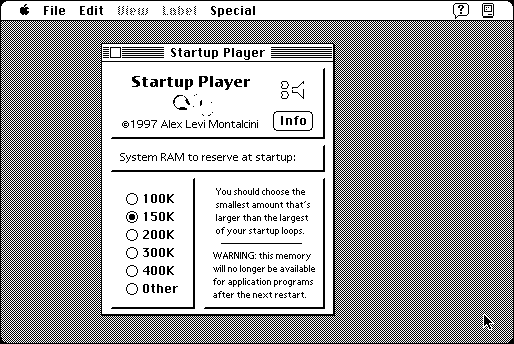

Download
startup-player-21.zip (213K) Startup Player 2.1 repackaged into a zipped hfs disk image and checksum file. The disk image can be mounted with Mini vMac.
startup-player-21.hqx (287K) Startup Player 2.1 in the original format.
copyright: Alessandro Levi Montalcini
mod date: Oct 17, 1997
license: Freeware
last known url
(gone)
Plays “a sound loop over and over during startup”, and can also play a sound at shutdown time. Requires System 7, at least on a Macintosh Plus.

If you find these downloads useful, please consider helping the Gryphel Project, which hosts them.
Here are the md5 checksums for the downloads, signed with Gryphel Key 5:
--------- GRY SIGNED TEXT --------- d6baf249dd6f940e803c99d3249fed2d startup-player-21.zip c073c92577463842341222f628026f6b startup-player-21.hqx ------- BEGIN GRY SIGNATURE ------- Gry/4Xa8CFcUzxdN/PIgsqFhdD16YFcnoQgk0xqRN1ljVx/yxslUIAF+gknmQd48 UEULlzi0dxmR/VtnQSe14Izn1MilSTMIv2MpFeGGrl401s8wWhe8cYiitu8ZRKuV DqCXdWox11U2OXYZsm5bMCnoOJ3BLdwzVCUKtAvml8krVNau5l5K8B/3zqnUD4rx -------- END GRY SIGNATURE --------